Essential Statistics with R
This workshop will provide hands-on instruction and exercises covering basic statistical analysis in R. This will cover descriptive statistics, t-tests, linear models, chi-square, clustering, dimensionality reduction, and resampling strategies. We will also cover methods for “tidying” model results for downstream visualization and summarization.
Prerequisites: Familiarity with R is required (including working with data frames, installing/using packages, importing data, and saving results); familiarity with dplyr and ggplot2 packages is highly recommended.
You must complete the basic R setup here prior to class. This includes installing R, RStudio, and the required packages. Please contact one of the instructors prior to class if you are having difficulty with any of the setup. Please bring your laptop and charger cable to class.
Handouts: Download and print out these handouts and bring them to class:
Slides: click here.
Our data: NHANES
About NHANES
The data we’re going to work with comes from the National Health and Nutrition Examination Survey (NHANES) program at the CDC. You can read a lot more about NHANES on the CDC’s website or Wikipedia. NHANES is a research program designed to assess the health and nutritional status of adults and children in the United States. The survey is one of the only to combine both survey questions and physical examinations. It began in the 1960s and since 1999 examines a nationally representative sample of about 5,000 people each year. The NHANES interview includes demographic, socioeconomic, dietary, and health-related questions. The physical exam includes medical, dental, and physiological measurements, as well as several standard laboratory tests. NHANES is used to determine the prevalence of major diseases and risk factors for those diseases. NHANES data are also the basis for national standards for measurements like height, weight, and blood pressure. Data from this survey is used in epidemiology studies and health sciences research, which help develop public health policy, direct and design health programs and services, and expand the health knowledge for the Nation.
We are using a small slice of this data. We’re only using a handful of variables from the 2011-2012 survey years on about 5,000 individuals. The CDC uses a sampling strategy to purposefully oversample certain subpopulations like racial minorities. Naive analysis of the original NHANES data can lead to mistaken conclusions because the percentages of people from each racial group in the data are different from general population. The 5,000 individuals here are resampled from the larger NHANES study population to undo these oversampling effects, so you can treat this as if it were a simple random sample from the American population.
You can download the data at the link above. The file is called nhanes.csv. There’s also a data dictionary (filename nhanes_dd.csv) that lists and describes each variable in our NHANES dataset. This table is copied below.
| Variable | Definition |
|---|---|
| id | A unique sample identifier |
| Gender | Gender (sex) of study participant coded as male or female |
| Age | Age in years at screening of study participant. Note: Subjects 80 years or older were recorded as 80. |
| Race | Reported race of study participant, including non-Hispanic Asian category: Mexican, Hispanic, White, Black, Asian, or Other. Not availale for 2009-10. |
| Education | Educational level of study participant Reported for participants aged 20 years or older. One of 8thGrade, 9-11thGrade, HighSchool, SomeCollege, or CollegeGrad. |
| MaritalStatus | Marital status of study participant. Reported for participants aged 20 years or older. One of Married, Widowed, Divorced, Separated, NeverMarried, or LivePartner (living with partner). |
| RelationshipStatus | Simplification of MaritalStatus, coded as Committed if MaritalStatus is Married or LivePartner, and Single otherwise. |
| Insured | Indicates whether the individual is covered by health insurance. |
| Income | Numerical version of HHIncome derived from the middle income in each category |
| Poverty | A ratio of family income to poverty guidelines. Smaller numbers indicate more poverty |
| HomeRooms | How many rooms are in home of study participant (counting kitchen but not bathroom). 13 rooms = 13 or more rooms. |
| HomeOwn | One of Home, Rent, or Other indicating whether the home of study participant or someone in their family is owned, rented or occupied by some other arrangement. |
| Work | Indicates whether the individual is current working or not. |
| Weight | Weight in kg |
| Height | Standing height in cm. Reported for participants aged 2 years or older. |
| BMI | Body mass index (weight/height2 in kg/m2). Reported for participants aged 2 years or older. |
| Pulse | 60 second pulse rate |
| BPSys | Combined systolic blood pressure reading, following the procedure outlined for BPXSAR. |
| BPDia | Combined diastolic blood pressure reading, following the procedure outlined for BPXDAR. |
| Testosterone | Testerone total (ng/dL). Reported for participants aged 6 years or older. Not available for 2009-2010. |
| HDLChol | Direct HDL cholesterol in mmol/L. Reported for participants aged 6 years or older. |
| TotChol | Total HDL cholesterol in mmol/L. Reported for participants aged 6 years or older. |
| Diabetes | Study participant told by a doctor or health professional that they have diabetes. Reported for participants aged 1 year or older as Yes or No. |
| DiabetesAge | Age of study participant when first told they had diabetes. Reported for participants aged 1 year or older. |
| nPregnancies | How many times participant has been pregnant. Reported for female participants aged 20 years or older. |
| nBabies | How many of participants deliveries resulted in live births. Reported for female participants aged 20 years or older. |
| SleepHrsNight | Self-reported number of hours study participant usually gets at night on weekdays or workdays. Reported for participants aged 16 years and older. |
| PhysActive | Participant does moderate or vigorous-intensity sports, fitness or recreational activities (Yes or No). Reported for participants 12 years or older. |
| PhysActiveDays | Number of days in a typical week that participant does moderate or vigorous-intensity activity. Reported for participants 12 years or older. |
| AlcoholDay | Average number of drinks consumed on days that participant drank alcoholic beverages. Reported for participants aged 18 years or older. |
| AlcoholYear | Estimated number of days over the past year that participant drank alcoholic beverages. Reported for participants aged 18 years or older. |
| SmokingStatus | Smoking status: Current Former or Never. |
Import & inspect
First, let’s load the dplyr and readr libraries.
library(readr)
library(dplyr)If you see a warning that looks like this: Error in library(dplyr) : there is no package called 'dplyr' (or similar with readr), then you don’t have the package installed correctly. See the setup page.
Now, let’s actually load the data. When we load data we assign it to a variable just like any other, and we can choose a name for that data. Since we’re going to be referring to this data a lot, let’s give it a short easy name to type. I’m going to call it nh. Once we’ve loaded it we can type the name of the object itself (nh) to see it printed to the screen.
nh <- read_csv(file="data/nhanes.csv")
nh## # A tibble: 5,000 x 32
## id Gender Age Race Education MaritalStatus
## <int> <chr> <int> <chr> <chr> <chr>
## 1 62163 male 14 Asian <NA> <NA>
## 2 62172 female 43 Black High School NeverMarried
## 3 62174 male 80 White College Grad Married
## 4 62174 male 80 White College Grad Married
## 5 62175 male 5 White <NA> <NA>
## 6 62176 female 34 White College Grad Married
## 7 62178 male 80 White High School Widowed
## 8 62180 male 35 White College Grad Married
## 9 62186 female 17 Black <NA> <NA>
## 10 62190 female 15 Mexican <NA> <NA>
## # ... with 4,990 more rows, and 26 more variables:
## # RelationshipStatus <chr>, Insured <chr>, Income <int>, Poverty <dbl>,
## # HomeRooms <int>, HomeOwn <chr>, Work <chr>, Weight <dbl>,
## # Height <dbl>, BMI <dbl>, Pulse <int>, BPSys <int>, BPDia <int>,
## # Testosterone <dbl>, HDLChol <dbl>, TotChol <dbl>, Diabetes <chr>,
## # DiabetesAge <int>, nPregnancies <int>, nBabies <int>,
## # SleepHrsNight <int>, PhysActive <chr>, PhysActiveDays <int>,
## # AlcoholDay <int>, AlcoholYear <int>, SmokingStatus <chr>Take a look at that output. The nice thing about loading dplyr and reading data with readr functions is that data are displayed in a much more friendly way. This dataset has 5,000 rows and 32 columns. When you import/convert data this way and try to display the object in the console, instead of trying to display all 5,000 rows, you’ll only see about 10 by default. Also, if you have so many columns that the data would wrap off the edge of your screen, those columns will not be displayed, but you’ll see at the bottom of the output which, if any, columns were hidden from view.
A note on characters versus factors: One thing that you immediately notice is that all the categorical variables are read in as character data types. This data type is used for storing strings of text, for example, IDs, names, descriptive text, etc. There’s another related data type called factors. Factor variables are used to represent categorical variables with two or more levels, e.g., “male” or “female” for Gender, or “Single” versus “Committed” for RelationshipStatus. For the most part, statistical analysis treats these two data types the same. It’s often easier to leave categorical variables as characters. However, in some cases you may get a warning message alerting you that a character variable was converted into a factor variable during analysis. Generally, these warnings are nothing to worry about. You can, if you like, convert individual variables to factor variables, or simply use dplyr’s
mutate_ifto convert all character vectors to factor variables:
nh <- nh %>% mutate_if(is.character, as.factor)
nhNow just take a look at just a few columns that are now factors. Remember, you can look at individual variables with the mydataframe$specificVariable syntax.
nh$RelationshipStatus
nh$Race
levels(nh$Race)If you want to see the whole dataset, there are two ways to do this. First, you can click on the name of the data.frame in the Environment panel in RStudio. Or you could use the View() function (with a capital V).
View(nh)Recall several built-in functions that are useful for working with data frames.
- Content:
head(): shows the first few rowstail(): shows the last few rows
- Size:
dim(): returns a 2-element vector with the number of rows in the first element, and the number of columns as the second element (the dimensions of the object)nrow(): returns the number of rowsncol(): returns the number of columns
- Summary:
colnames()(or justnames()): returns the column namesglimpse()(from dplyr): Returns a glimpse of your data, telling you the structure of the dataset and information about the class, length and content of each column
head(nh)
tail(nh)
dim(nh)
names(nh)
glimpse(nh)Descriptive statistics
We can access individual variables within a data frame using the $ operator, e.g., mydataframe$specificVariable. Let’s print out all the Race values in the data. Let’s then see what are the unique values of each. Then let’s calculate the mean, median, and range of the Age variable.
# Display all Race values
nh$Race
# Get the unique values of Race
unique(nh$Race)
length(unique(nh$Race))
# Do the same thing the dplyr way
nh$Race %>% unique()
nh$Race %>% unique() %>% length()
# Age mean, median, range
mean(nh$Age)
median(nh$Age)
range(nh$Age)You could also do the last few operations using dplyr, but remember, this returns a single-row, single-column tibble, not a single scalar value like the above. This is only really useful in the context of grouping and summarizing.
# Compute the mean age
nh %>%
summarize(mean(Age))
# Now grouped by other variables
nh %>%
group_by(Gender, Race) %>%
summarize(mean(Age))The summary() function (note, this is different from dplyr’s summarize()) works differently depending on which kind of object you pass to it. If you run summary() on a data frame, you get some very basic summary statistics on each variable in the data.
summary(nh)Missing data
Let’s try taking the mean of a different variable, either the dplyr way or the simpler $ way.
# the dplyr way: returns a single-row single-column tibble/dataframe
nh %>% summarize(mean(Income))
# returns a single value
mean(nh$Income)What happened there? NA indicates missing data. Take a look at the Income variable.
# Look at just the Income variable
nh$Income
# Or view the dataset
# View(nh)Notice that there are lots of missing values for Income. Trying to get the mean a bunch of observations with some missing data returns a missing value by default. This is almost universally the case with all summary statistics – a single NA will cause the summary to return NA. Now look at the help for ?mean. Notice the na.rm argument. This is a logical (i.e., TRUE or FALSE) value indicating whether or not missing values should be removed prior to computing the mean. By default, it’s set to FALSE. Now try it again.
mean(nh$Income, na.rm=TRUE)## [1] 57077.66The is.na() function tells you if a value is missing. Get the sum() of that vector, which adds up all the TRUEs to tell you how many of the values are missing.
is.na(nh$Income)
sum(is.na(nh$Income))There are a few handy functions in the Tmisc package for summarizing missingness in a data frame. You can graphically display missingness in a data frame as holes on a black canvas with gg_na() (use ggplot2 to plot NA values), or show a table of all the variables and the missingness level with propmiss().
# Install if you don't have it already
# install.packages("Tmisc")
# Load Tmisc
library(Tmisc)gg_na(nh)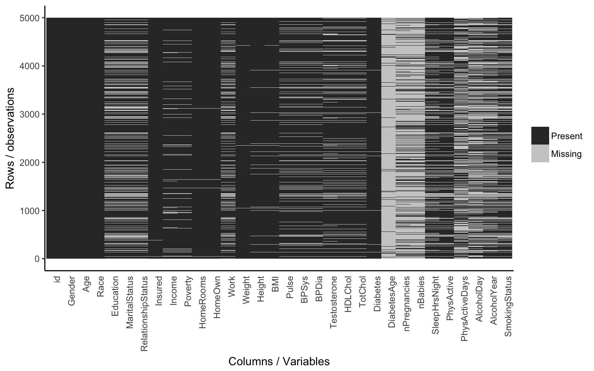
propmiss(nh)## var nmiss n propmiss
## 1 id 0 5000 0.0000
## 2 Gender 0 5000 0.0000
## 3 Age 0 5000 0.0000
## 4 Race 0 5000 0.0000
## 5 Education 1416 5000 0.2832
## 6 MaritalStatus 1415 5000 0.2830
## 7 RelationshipStatus 1415 5000 0.2830
## 8 Insured 7 5000 0.0014
## 9 Income 377 5000 0.0754
## 10 Poverty 325 5000 0.0650
## 11 HomeRooms 28 5000 0.0056
## 12 HomeOwn 28 5000 0.0056
## 13 Work 1158 5000 0.2316
## 14 Weight 31 5000 0.0062
## 15 Height 159 5000 0.0318
## 16 BMI 166 5000 0.0332
## 17 Pulse 718 5000 0.1436
## 18 BPSys 719 5000 0.1438
## 19 BPDia 719 5000 0.1438
## 20 Testosterone 874 5000 0.1748
## 21 HDLChol 775 5000 0.1550
## 22 TotChol 775 5000 0.1550
## 23 Diabetes 64 5000 0.0128
## 24 DiabetesAge 4693 5000 0.9386
## 25 nPregnancies 3735 5000 0.7470
## 26 nBabies 3832 5000 0.7664
## 27 SleepHrsNight 1166 5000 0.2332
## 28 PhysActive 850 5000 0.1700
## 29 PhysActiveDays 2614 5000 0.5228
## 30 AlcoholDay 2503 5000 0.5006
## 31 AlcoholYear 2016 5000 0.4032
## 32 SmokingStatus 1413 5000 0.2826Now, let’s talk about exploratory data analysis (EDA).
EDA
It’s always worth examining your data visually before you start any statistical analysis or hypothesis testing. We could spend an entire day on exploratory data analysis. The data visualization lesson covers this in much broader detail. Here we’ll just mention a few of the big ones: histograms and scatterplots.
Histograms
We can learn a lot from the data just looking at the value distributions of particular variables. Let’s make some histograms with ggplot2. Looking at BMI shows a few extreme outliers. Looking at weight initially shows us that the units are probably in kg. Replotting that in lbs with more bins shows a clear bimodal distribution. Are there kids in this data? The age distribution shows us the answer is yes.
library(ggplot2)
ggplot(nh, aes(BMI)) + geom_histogram(bins=30)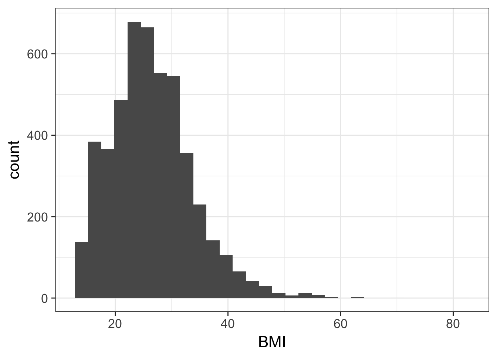
ggplot(nh, aes(Weight)) + geom_histogram(bins=30)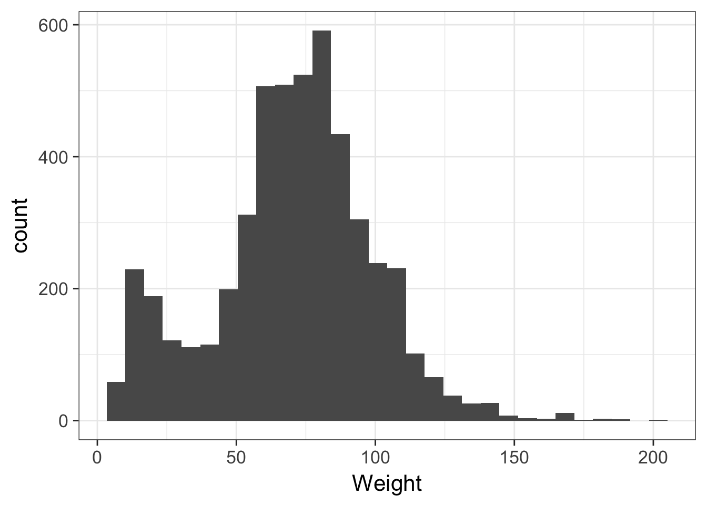
# In pounds, more bins
ggplot(nh, aes(Weight*2.2)) + geom_histogram(bins=80)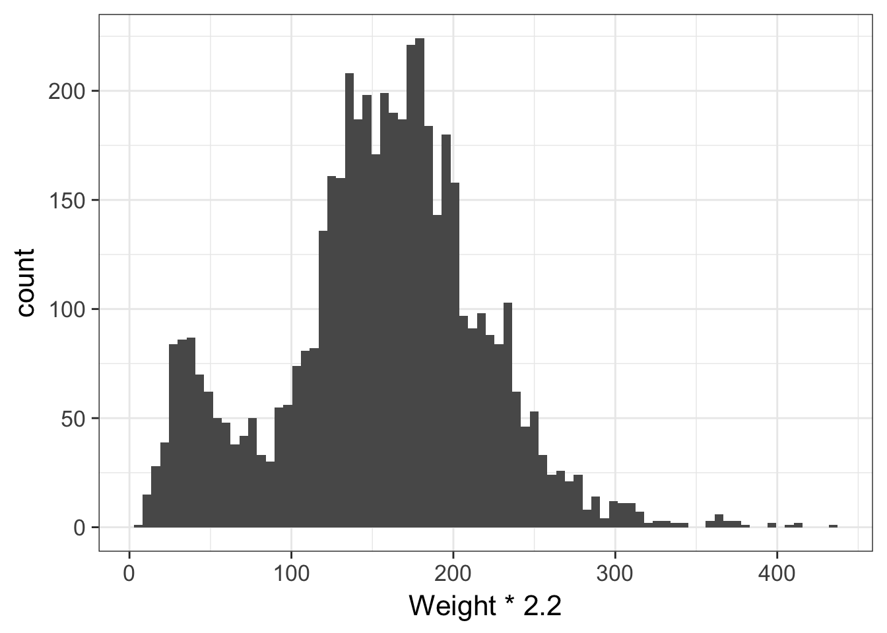
ggplot(nh, aes(Age)) + geom_histogram(bins=30)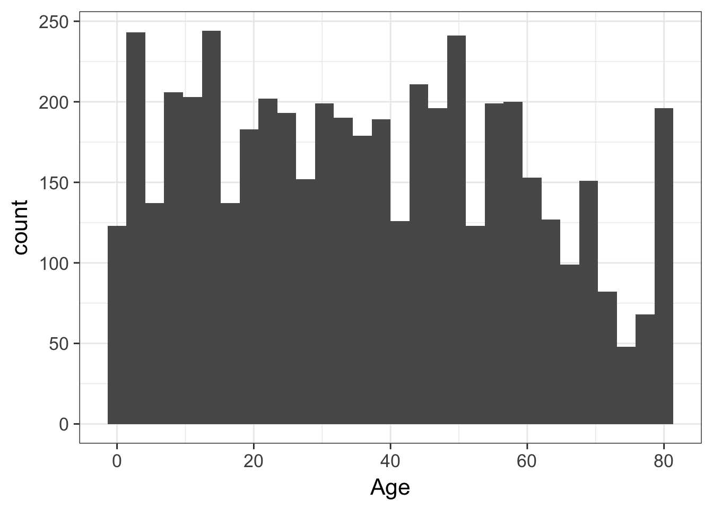
Scatterplots
Let’s look at how a few different variables relate to each other. E.g., height and weight:
ggplot(nh, aes(Height, Weight, col=Gender)) + geom_point()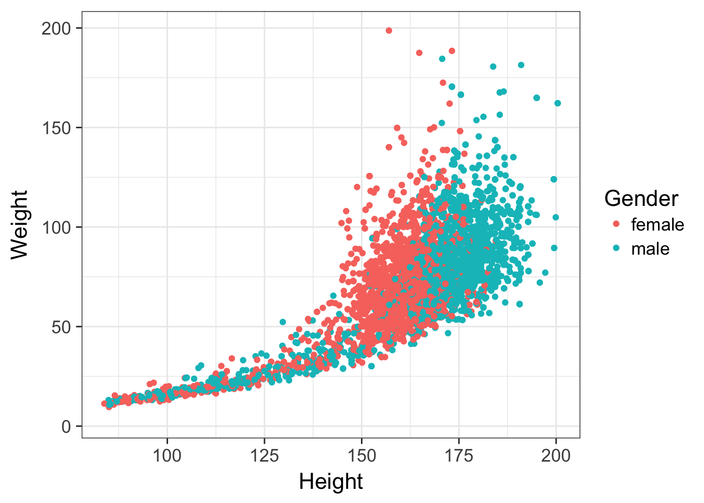
Let’s filter out all the kids, draw trend lines using a linear model:
nh %>%
filter(Age>=18) %>%
ggplot(aes(Height, Weight, col=Gender)) +
geom_point() +
geom_smooth(method="lm")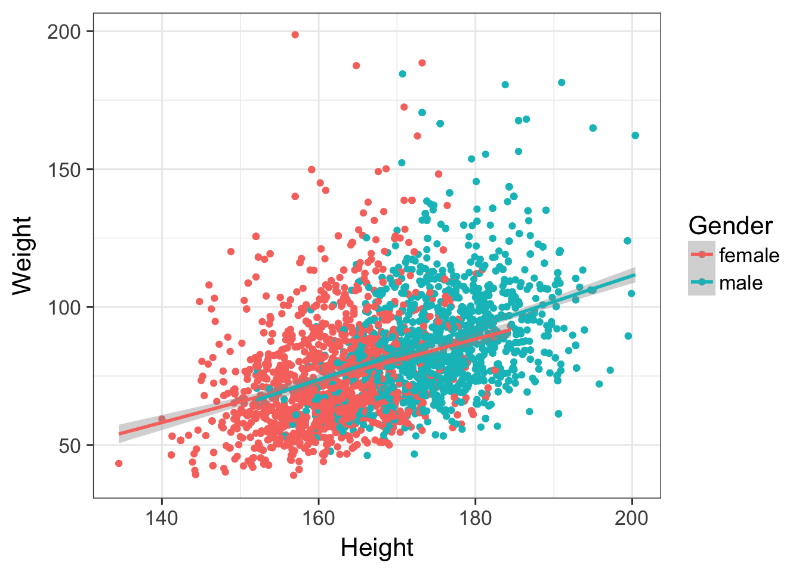
Check out the data visualization lesson for much more on this topic.
Exercise set 1
- What’s the mean 60-second pulse rate for all participants in the data?
## [1] 73.63382- What’s the range of values for diastolic blood pressure in all participants? (Hint: see help for
min(),max(), andrange()functions, e.g., enter?rangewithout the parentheses to get help).
## [1] 0 116- What are the median, lower, and upper quartiles for the age of all participants? (Hint: see help for
median, or better yet,quantile).
## 0% 25% 50% 75% 100%
## 0 17 36 54 80- What’s the variance and standard deviation for income among all participants?
## [1] 1121564068## [1] 33489.76Continuous variables
T-tests
First let’s create a new dataset from nh called nha that only has adults. To prevent us from making any mistakes downstream, let’s remove the nh object.
nha <- filter(nh, Age>=18)
rm(nh)
# View(nha)Let’s do a few two-sample t-tests to test for differences in means between two groups. The function for a t-test is t.test(). See the help for ?t.test. We’ll be using the forumla method. The usage is t.test(response~group, data=myDataFrame).
- Are there differences in age for males versus females in this dataset?
- Does BMI differ between diabetics and non-diabetics?
- Do single or married/cohabitating people drink more alcohol? Is this relationship significant?
t.test(Age~Gender, data=nha)##
## Welch Two Sample t-test
##
## data: Age by Gender
## t = 1.9122, df = 3697.2, p-value = 0.05593
## alternative hypothesis: true difference in means is not equal to 0
## 95 percent confidence interval:
## -0.02776814 2.22191122
## sample estimates:
## mean in group female mean in group male
## 47.06412 45.96704t.test(BMI~Diabetes, data=nha)##
## Welch Two Sample t-test
##
## data: BMI by Diabetes
## t = -11.379, df = 407.31, p-value < 2.2e-16
## alternative hypothesis: true difference in means is not equal to 0
## 95 percent confidence interval:
## -5.563596 -3.924435
## sample estimates:
## mean in group No mean in group Yes
## 28.08753 32.83155t.test(AlcoholYear~RelationshipStatus, data=nha)##
## Welch Two Sample t-test
##
## data: AlcoholYear by RelationshipStatus
## t = 5.4315, df = 2674.8, p-value = 6.09e-08
## alternative hypothesis: true difference in means is not equal to 0
## 95 percent confidence interval:
## 13.05949 27.81603
## sample estimates:
## mean in group Committed mean in group Single
## 83.93416 63.49640See the heading, Welch Two Sample t-test, and notice that the degrees of freedom might not be what we expected based on our sample size. Now look at the help for ?t.test again, and look at the var.equal argument, which is by default set to FALSE. One of the assumptions of the t-test is homoscedasticity, or homogeneity of variance. This assumes that the variance in the outcome (e.g., BMI) is identical across both levels of the predictor (diabetic vs non-diabetic). Since this is rarely the case, the t-test defaults to using the Welch correction, which is a more reliable version of the t-test when the homoscedasticity assumption is violated.
A note on one-tailed versus two-tailed tests: A two-tailed test is almost always more appropriate. The hypothesis you’re testing here is spelled out in the results (“alternative hypothesis: true difference in means is not equal to 0”). If the p-value is very low, you can reject the null hypothesis that there’s no difference in means. Because you typically don’t know a priori whether the difference in means will be positive or negative (e.g., we don’t know a priori whether Single people would be expected to drink more or less than those in a committed relationship), we want to do the two-tailed test. However, if we only wanted to test a very specific directionality of effect, we could use a one-tailed test and specify which direction we expect. This is more powerful if we “get it right”, but much less powerful for the opposite effect. Notice how the p-value changes depending on how we specify the hypothesis. Again, the two-tailed test is almost always more appropriate.
# Two tailed
t.test(AlcoholYear~RelationshipStatus, data=nha)
# Difference in means is >0 (committed drink more)
t.test(AlcoholYear~RelationshipStatus, data=nha, alternative="greater")
# Difference in means is <0 (committed drink less)
t.test(AlcoholYear~RelationshipStatus, data=nha, alternative="less")A note on paired versus unpaired t-tests: The t-test we performed here was an unpaired test. Here the males and females are different people. The diabetics and nondiabetics are different samples. The single and committed individuals are completely independent, separate observations. In this case, an unpaired test is appropriate. An alternative design might be when data is derived from samples who have been measured at two different time points or locations, e.g., before versus after treatment, left versus right hand, etc. In this case, a paired t-test would be more appropriate. A paired test takes into consideration the intra and inter-subject variability, and is more powerful than the unpaired test. See the help for
?t.testfor more information on how to do this.
Wilcoxon test
Another assumption of the t-test is that data is normally distributed. Looking at the histogram for AlcoholYear shows that this data clearly isn’t.
ggplot(nha, aes(AlcoholYear)) + geom_histogram()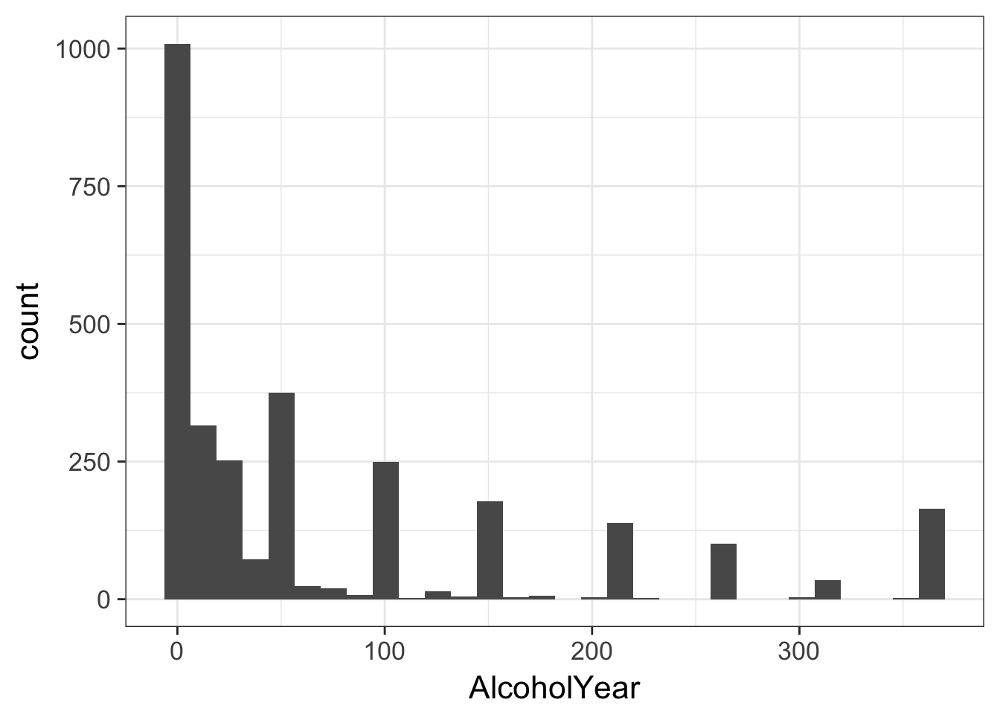
The Wilcoxon rank-sum test (a.k.a. Mann-Whitney U test) is a nonparametric test of differences in mean that does not require normally distributed data. When data is perfectly normal, the t-test is uniformly more powerful. But when this assumption is violated, the t-test is unreliable. This test is called in a similar way as the t-test.
wilcox.test(AlcoholYear~RelationshipStatus, data=nha)##
## Wilcoxon rank sum test with continuity correction
##
## data: AlcoholYear by RelationshipStatus
## W = 1068000, p-value = 0.0001659
## alternative hypothesis: true location shift is not equal to 0The results are still significant, but much less than the p-value reported for the (incorrect) t-test above. Also note in the help for ?wilcox.test that there’s a paired option here too.
Linear models
Analysis of variance and linear modeling are complex topics that deserve an entire semester dedicated to theory, design, and interpretation. A very good resource is An Introduction to Statistical Learning: with Applications in R by Gareth James, Daniela Witten, Trevor Hastie and Robert Tibshirani. The PDF of the book and all the R code used throughout are available free on the author’s website. What follows is a necessary over-simplification with more focus on implementation, and less on theory and design.
Where t-tests and their nonparametric substitutes are used for assessing the differences in means between two groups, ANOVA is used to assess the significance of differences in means between multiple groups. In fact, a t-test is just a specific case of ANOVA when you only have two groups. And both t-tests and ANOVA are just specific cases of linear regression, where you’re trying to fit a model describing how a continuous outcome (e.g., BMI) changes with some predictor variable (e.g., diabetic status, race, age, etc.). The distinction is largely semantic – with a linear model you’re asking, “do levels of a categorical variable affect the response?” where with ANOVA or t-tests you’re asking, “does the mean response differ between levels of a categorical variable?”
Let’s examine the relationship between BMI and relationship status (RelationshipStatus was derived from MaritalStatus, coded as Committed if MaritalStatus is Married or LivePartner, and Single otherwise). Let’s first do this with a t-test, and for now, let’s assume that the variances between groups are equal.
t.test(BMI~RelationshipStatus, data=nha, var.equal=TRUE)##
## Two Sample t-test
##
## data: BMI by RelationshipStatus
## t = -1.5319, df = 3552, p-value = 0.1256
## alternative hypothesis: true difference in means is not equal to 0
## 95 percent confidence interval:
## -0.77817842 0.09552936
## sample estimates:
## mean in group Committed mean in group Single
## 28.51343 28.85475It looks like single people have a very slightly higher BMI than those in a committed relationship, but the magnitude of the difference is trivial, and the difference is not significant. Now, let’s do the same test in a linear modeling framework. First, let’s create the fitted model and store it in an object called fit.
fit <- lm(BMI~RelationshipStatus, data=nha)You can display the object itself, but that isn’t too interesting. You can get the more familiar ANOVA table by calling the anova() function on the fit object. More generally, the summary() function on a linear model object will tell you much more. (Note this is different from dplyr’s summarize function).
fit##
## Call:
## lm(formula = BMI ~ RelationshipStatus, data = nha)
##
## Coefficients:
## (Intercept) RelationshipStatusSingle
## 28.5134 0.3413anova(fit)## Analysis of Variance Table
##
## Response: BMI
## Df Sum Sq Mean Sq F value Pr(>F)
## RelationshipStatus 1 98 98.320 2.3467 0.1256
## Residuals 3552 148819 41.897summary(fit)##
## Call:
## lm(formula = BMI ~ RelationshipStatus, data = nha)
##
## Residuals:
## Min 1Q Median 3Q Max
## -12.813 -4.613 -0.955 3.287 52.087
##
## Coefficients:
## Estimate Std. Error t value Pr(>|t|)
## (Intercept) 28.5134 0.1388 205.440 <2e-16
## RelationshipStatusSingle 0.3413 0.2228 1.532 0.126
##
## Residual standard error: 6.473 on 3552 degrees of freedom
## (153 observations deleted due to missingness)
## Multiple R-squared: 0.0006602, Adjusted R-squared: 0.0003789
## F-statistic: 2.347 on 1 and 3552 DF, p-value: 0.1256Go back and re-run the t-test assuming equal variances as we did before. Now notice a few things:
t.test(BMI~RelationshipStatus, data=nha, var.equal=TRUE)- The p-values from all three tests (t-test, ANOVA, and linear regression) are all identical (p=0.1256). This is because they’re all identical: a t-test is a specific case of ANOVA, which is a specific case of linear regression. There may be some rounding error, but we’ll talk about extracting the exact values from a model object later on.
- The test statistics are all related. The t statistic from the t-test is 1.532, which is the same as the t-statistic from the linear regression. If you square that, you get 2.347, the F statistic from the ANOVA.
- The
t.test()output shows you the means for the two groups, Committed and Single. Just displaying thefitobject itself or runningsummary(fit)shows you the coefficients for a linear model. Here, the model assumes the “baseline” RelationshipStatus level is Committed, and that the intercept in a regression model (e.g., \(\beta_{0}\) in the model \(Y = \beta_{0} + \beta_{1}X\)) is the mean of the baseline group. Being Single results in an increase in BMI of 0.3413. This is the \(\beta_{1}\) coefficient in the model. You can easily change the ordering of the levels. See the help for?factor, and check out the new forcats package, which provides tools for manipulating categorical variables.
# P-value computed on a t-statistic with 3552 degrees of freedom
# (multiply times 2 because t-test is assuming two-tailed)
2*(1-pt(1.532, df=3552))## [1] 0.1256115# P-value computed on an F-test with 1 and 3552 degrees of freedom
1-pf(2.347, df1=1, df2=3552)## [1] 0.1256134A note on dummy coding: If you have a \(k\)-level factor, R creates \(k-1\) dummy variables, or indicator variables, by default, using the alphabetically first level as baseline. For example, the levels of RelationshipStatus are “Committed” and “Single”. R creates a dummy variable called “RelationshipStatusSingle” that’s 0 if you’re committed, and 1 if you’re Single. The linear model is saying for every unit increase in RelationshipStatusSingle, i.e., going from committed to single, results in a 0.314-unit increase in BMI. You can change the ordering of the factors to change the interpretation of the model (e.g., treating Single as baseline and going from Single to Committed). We’ll do this in the next section.
ANOVA
Recap: t-tests are for assessing the differences in means between two groups. A t-test is a specific case of ANOVA, which is a specific case of a linear model. Let’s run ANOVA, but this time looking for differences in means between more than two groups.
Let’s look at the relationship between smoking status (Never, Former, or Current), and BMI.
fit <- lm(BMI~SmokingStatus, data=nha)
anova(fit)## Analysis of Variance Table
##
## Response: BMI
## Df Sum Sq Mean Sq F value Pr(>F)
## SmokingStatus 2 1411 705.50 16.988 4.54e-08
## Residuals 3553 147551 41.53summary(fit)##
## Call:
## lm(formula = BMI ~ SmokingStatus, data = nha)
##
## Residuals:
## Min 1Q Median 3Q Max
## -12.565 -4.556 -1.056 3.315 51.744
##
## Coefficients:
## Estimate Std. Error t value Pr(>|t|)
## (Intercept) 27.3914 0.2446 111.975 < 2e-16
## SmokingStatusFormer 1.7736 0.3293 5.387 7.65e-08
## SmokingStatusNever 1.4645 0.2838 5.161 2.60e-07
##
## Residual standard error: 6.444 on 3553 degrees of freedom
## (151 observations deleted due to missingness)
## Multiple R-squared: 0.009472, Adjusted R-squared: 0.008915
## F-statistic: 16.99 on 2 and 3553 DF, p-value: 4.54e-08The F-test on the ANOVA table tells us that there is a significant difference in means between current, former, and never smokers (p=\(4.54 \times 10^{-8}\)). However, the linear model output might not have been what we wanted. Because the default handling of categorical variables is to treat the alphabetical first level as the baseline, “Current” smokers are treated as baseline, and this mean becomes the intercept, and the coefficients on “Former” and “Never” describe how those groups’ means differ from current smokers.
Back to dummy coding / indicator variables: SmokingStatus is “Current”, “Former”, and “Never.” By default, R will create two indicator variables here that in tandem will explain this variable.
| Original SmokingStatus | Indicator: SmokingStatusFormer | Indicator: SmokingStatusNever |
|---|---|---|
| Current | 0 | 0 |
| Former | 1 | 0 |
| Never | 0 | 1 |
What if we wanted “Never” smokers to be the baseline, followed by Former, then Current? Have a look at ?factor to relevel the factor levels.
# Look at nha$SmokingStatus
nha$SmokingStatus
# What happens if we relevel it? Let's see what that looks like.
relevel(nha$SmokingStatus, ref="Never")
# If we're happy with that, let's change the value of nha$SmokingStatus in place
nha$SmokingStatus <- relevel(nha$SmokingStatus, ref="Never")
# Or we could do this the dplyr way
nha <- nha %>%
mutate(SmokingStatus=relevel(SmokingStatus, ref="Never"))# Re-fit the model
fit <- lm(BMI~SmokingStatus, data=nha)
# Optionally, show the ANOVA table
# anova(fit)
# Print the full model statistics
summary(fit)##
## Call:
## lm(formula = BMI ~ SmokingStatus, data = nha)
##
## Residuals:
## Min 1Q Median 3Q Max
## -12.565 -4.556 -1.056 3.315 51.744
##
## Coefficients:
## Estimate Std. Error t value Pr(>|t|)
## (Intercept) 28.8558 0.1438 200.601 < 2e-16
## SmokingStatusCurrent -1.4645 0.2838 -5.161 2.6e-07
## SmokingStatusFormer 0.3091 0.2632 1.175 0.24
##
## Residual standard error: 6.444 on 3553 degrees of freedom
## (151 observations deleted due to missingness)
## Multiple R-squared: 0.009472, Adjusted R-squared: 0.008915
## F-statistic: 16.99 on 2 and 3553 DF, p-value: 4.54e-08Notice that the p-value on the ANOVA/regression didn’t change, but the coefficients did. Never smokers are now treated as baseline. The intercept coefficient (28.856) is now the mean for Never smokers. The SmokingStatusFormer coefficient of .309 shows the apparent increase in BMI that former smokers have when compared to never smokers, but that difference is not significant (p=.24). The SmokingStatusCurrent coefficient of -1.464 shows that current smokers actually have a lower BMI than never smokers, and that this decrease is highly significant.
Finally, you can do the typical post-hoc ANOVA procedures on the fit object. For example, the TukeyHSD() function will run Tukey’s test (also known as Tukey’s range test, the Tukey method, Tukey’s honest significance test, Tukey’s HSD test (honest significant difference), or the Tukey-Kramer method). Tukey’s test computes all pairwise mean difference calculation, comparing each group to each other group, identifying any difference between two groups that’s greater than the standard error, while controlling the type I error for all multiple comparisons. First run aov() (not anova()) on the fitted linear model object, then run TukeyHSD() on the resulting analysis of variance fit.
TukeyHSD(aov(fit))## Tukey multiple comparisons of means
## 95% family-wise confidence level
##
## Fit: aov(formula = fit)
##
## $SmokingStatus
## diff lwr upr p adj
## Current-Never -1.4644502 -2.1298249 -0.7990756 0.0000008
## Former-Never 0.3091076 -0.3079639 0.9261790 0.4685044
## Former-Current 1.7735578 1.0015525 2.5455631 0.0000002This shows that there isn’t much of a difference between former and never smokers, but that both of these differ significantly from current smokers, who have significantly lower BMI.
Finally, let’s visualize the differences in means between these groups. The NA category, which is omitted from the ANOVA, contains all the observations who have missing or non-recorded Smoking Status.
ggplot(nha, aes(SmokingStatus, BMI)) + geom_boxplot() + theme_classic()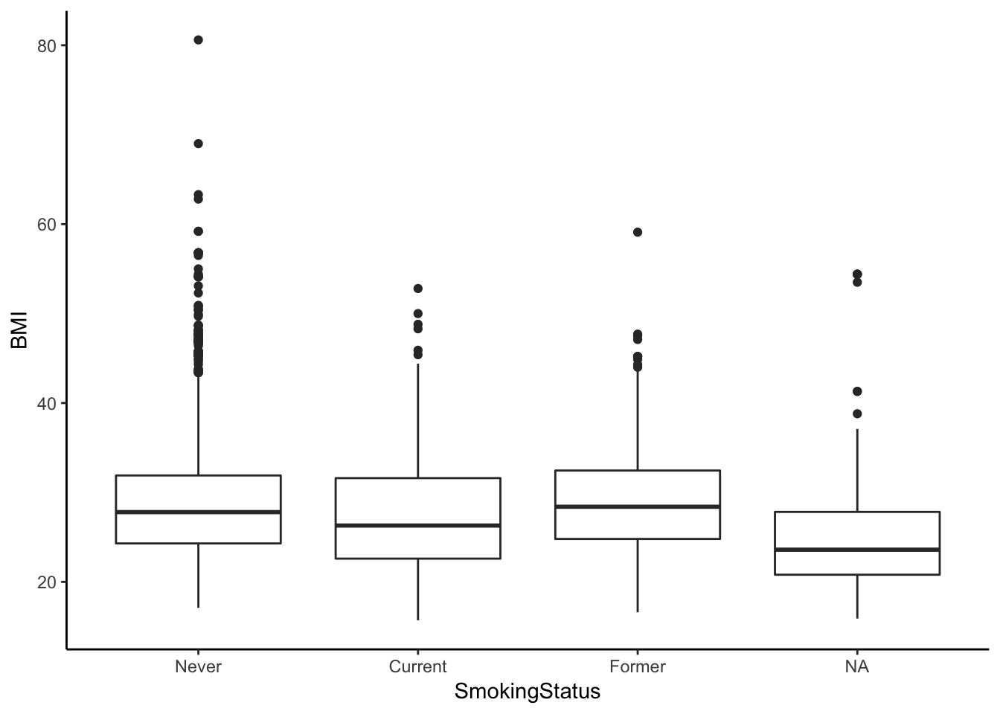
Linear regression
Linear models are mathematical representations of the process that (we think) gave rise to our data. The model seeks to explain the relationship between a variable of interest, our Y, outcome, response, or dependent variable, and one or more X, predictor, or independent variables. Previously we talked about t-tests or ANOVA in the context of a simple linear regression model with only a single predictor variable, \(X\):
\[Y = \beta_{0} + \beta_{1}X\]
But you can have multiple predictors in a linear model that are all additive, accounting for the effects of the others:
\[Y = \beta_{0} + \beta_{1}X_{1} + \beta_{2}X_{2} + \epsilon\]
- \(Y\) is the response
- \(X_{1}\) and \(X_{2}\) are the predictors
- \(\beta_{0}\) is the intercept, and \(\beta_{1}\), \(\beta_{2}\) etc are coefficients that describe what 1-unit changes in \(X_{1}\) and \(X_{2}\) do to the outcome variable \(Y\).
- \(\epsilon\) is random error. Our model will not perfectly predict \(Y\). It will be off by some random amount. We assume this amount is a random draw from a Normal distribution with mean 0 and standard deviation \(\sigma\).
Building a linear model means we propose a linear model and then estimate the coefficients and the variance of the error term. Above, this means estimating \(\beta_{0}, \beta_{1}, \beta_{2}\) and \(\sigma\). This is what we do in R.
Let’s look at the relationship between height and weight.
fit <- lm(Weight~Height, data=nha)
summary(fit)##
## Call:
## lm(formula = Weight ~ Height, data = nha)
##
## Residuals:
## Min 1Q Median 3Q Max
## -40.339 -13.109 -2.658 9.309 127.972
##
## Coefficients:
## Estimate Std. Error t value Pr(>|t|)
## (Intercept) -73.70590 5.08110 -14.51 <2e-16
## Height 0.91996 0.03003 30.63 <2e-16
##
## Residual standard error: 18.57 on 3674 degrees of freedom
## (31 observations deleted due to missingness)
## Multiple R-squared: 0.2034, Adjusted R-squared: 0.2032
## F-statistic: 938.4 on 1 and 3674 DF, p-value: < 2.2e-16The relationship is highly significant (P<\(2.2 \times 10^{-16}\)). The intercept term is not very useful most of the time. Here it shows us what the value of Weight would be when Height=0, which could never happen. The Height coefficient is meaningful – each one unit increase in height results in a 0.92 increase in the corresponding unit of weight. Let’s visualize that relationship:
ggplot(nha, aes(x=Height, y=Weight)) + geom_point() + geom_smooth(method="lm")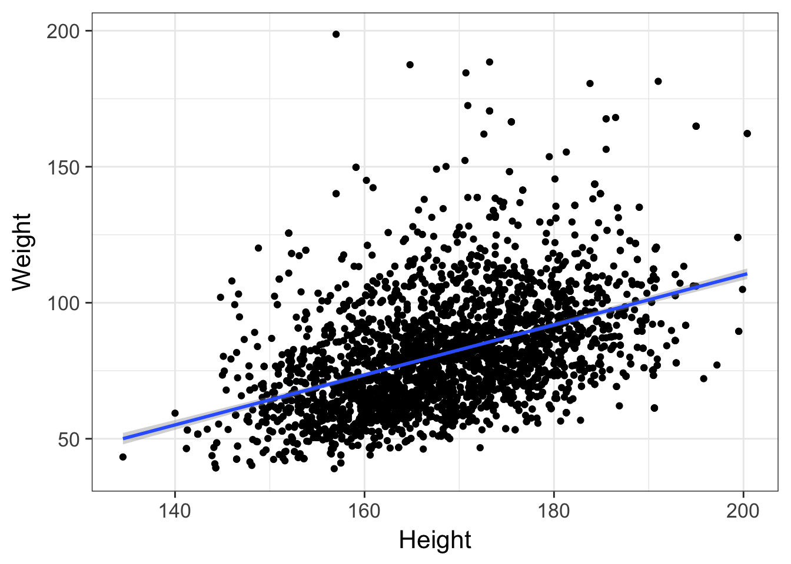
By default, this is only going to show the prediction over the range of the data. This is important! You never want to try to extrapolate response variables outside of the range of your predictor(s). For example, the linear model tells us that weight is -73.7kg when height is zero. We can extend the predicted model / regression line past the lowest value of the data down to height=0. The bands on the confidence interval tell us that the model is apparently confident within the regions defined by the gray boundary. But this is silly – we would never see a height of zero, and predicting past the range of the available training data is never a good idea.
ggplot(nha, aes(x=Height, y=Weight)) +
geom_point() +
geom_smooth(method="lm", fullrange=TRUE) +
xlim(0, NA) +
ggtitle("Friends don't let friends extrapolate.")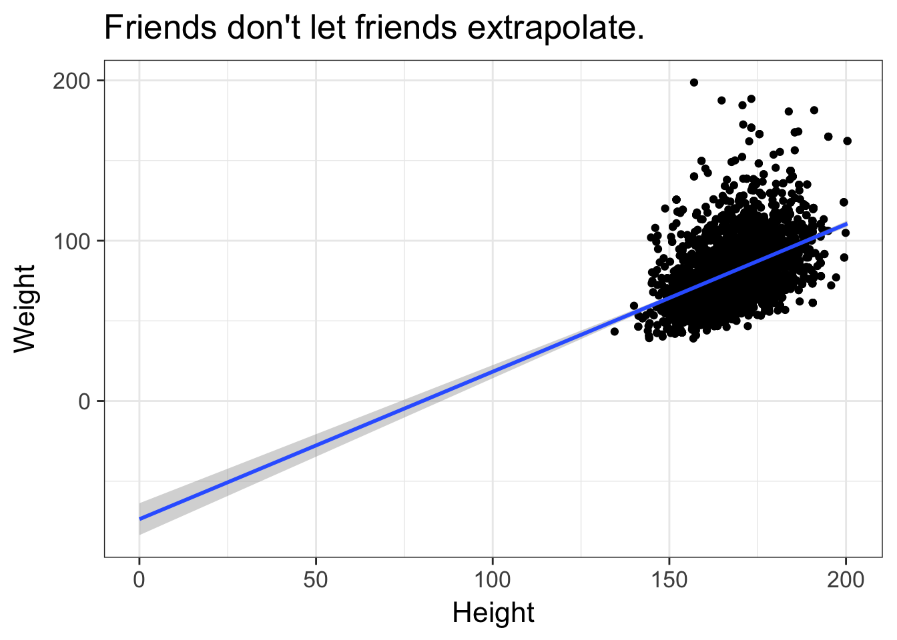
Multiple regression
Finally, let’s do a multiple linear regression analysis, where we attempt to model the effect of multiple predictor variables at once on some outcome. First, let’s look at the effect of physical activity on testosterone levels. Let’s do this with a t-test and linear regression, showing that you get the same results.
t.test(Testosterone~PhysActive, data=nha, var.equal=TRUE)##
## Two Sample t-test
##
## data: Testosterone by PhysActive
## t = -2.4298, df = 3436, p-value = 0.01516
## alternative hypothesis: true difference in means is not equal to 0
## 95 percent confidence interval:
## -34.813866 -3.720171
## sample estimates:
## mean in group No mean in group Yes
## 207.5645 226.8315summary(lm(Testosterone~PhysActive, data=nha))##
## Call:
## lm(formula = Testosterone ~ PhysActive, data = nha)
##
## Residuals:
## Min 1Q Median 3Q Max
## -224.5 -196.5 -115.9 167.0 1588.0
##
## Coefficients:
## Estimate Std. Error t value Pr(>|t|)
## (Intercept) 207.565 5.873 35.34 <2e-16
## PhysActiveYes 19.267 7.929 2.43 0.0152
##
## Residual standard error: 231.4 on 3436 degrees of freedom
## (269 observations deleted due to missingness)
## Multiple R-squared: 0.001715, Adjusted R-squared: 0.001425
## F-statistic: 5.904 on 1 and 3436 DF, p-value: 0.01516In both cases, the p-value is significant (p=0.01516), and the result suggest that increased physical activity is associated with increased testosterone levels. Does increasing your physical activity increase your testosterone levels? Or is it the other way – will increased testosterone encourage more physical activity? Or is it none of the above – is the apparent relationship between physical activity and testosterone levels only apparent because both are correlated with yet a third, unaccounted for variable? Let’s throw Age into the model as well.
summary(lm(Testosterone~PhysActive+Age, data=nha))##
## Call:
## lm(formula = Testosterone ~ PhysActive + Age, data = nha)
##
## Residuals:
## Min 1Q Median 3Q Max
## -238.6 -196.8 -112.3 167.4 1598.1
##
## Coefficients:
## Estimate Std. Error t value Pr(>|t|)
## (Intercept) 247.8828 13.0853 18.944 < 2e-16
## PhysActiveYes 13.6740 8.0815 1.692 0.090735
## Age -0.8003 0.2322 -3.447 0.000574
##
## Residual standard error: 231 on 3435 degrees of freedom
## (269 observations deleted due to missingness)
## Multiple R-squared: 0.005156, Adjusted R-squared: 0.004577
## F-statistic: 8.901 on 2 and 3435 DF, p-value: 0.0001394This shows us that after accounting for age that the testosterone / physical activity link is no longer significant. Every 1-year increase in age results in a highly significant decrease in testosterone, and since increasing age is also likely associated with decreased physical activity, perhaps age is the confounder that makes this relationship apparent.
Adding other predictors can also swing things the other way. We know that men have much higher testosterone levels than females. Sex is probably the single best predictor of testosterone levels in our dataset. By not accounting for this effect, our unaccounted-for variation remains very high. By accounting for Gender, we now reduce the residual error in the model, and the physical activity effect once again becomes significant. Also notice that our model fits much better (higher R-squared), and is much more significant overall.
summary(lm(Testosterone ~ PhysActive+Age+Gender, data=nha))##
## Call:
## lm(formula = Testosterone ~ PhysActive + Age + Gender, data = nha)
##
## Residuals:
## Min 1Q Median 3Q Max
## -397.91 -31.01 -4.42 20.50 1400.90
##
## Coefficients:
## Estimate Std. Error t value Pr(>|t|)
## (Intercept) 46.6931 7.5729 6.166 7.83e-10
## PhysActiveYes 9.2749 4.4617 2.079 0.0377
## Age -0.5904 0.1282 -4.605 4.28e-06
## Gendermale 385.1989 4.3512 88.526 < 2e-16
##
## Residual standard error: 127.5 on 3434 degrees of freedom
## (269 observations deleted due to missingness)
## Multiple R-squared: 0.6969, Adjusted R-squared: 0.6966
## F-statistic: 2632 on 3 and 3434 DF, p-value: < 2.2e-16We’ve only looked at the summary() and anova() functions for extracting information from an lm class object. There are several other accessor functions that can be used on a linear model object. Check out the help page for each one of these to learn more.
Exercise set 2
- Is the average BMI different in single people versus those in a committed relationship? Perform a t-test.
- The
Workvariable is coded “Looking” (n=159), “NotWorking” (n=1317), and “Working” (n=2230).- Fit a linear model of
IncomeagainstWork. Assign this to an object calledfit. What does thefitobject tell you when you display it directly? - Run an
anova()to get the ANOVA table. Is the model significant? - Run a Tukey test to get the pairwise contrasts. (Hint:
TukeyHSD()onaov()on the fit). What do you conclude? - Instead of thinking of this as ANOVA, think of it as a linear model. After you’ve thought about it, get some
summary()statistics on the fit. Do these results jive with the ANOVA model?
- Fit a linear model of
- Examine the relationship between HDL cholesterol levels (
HDLChol) and whether someone has diabetes or not (Diabetes).- Is there a difference in means between diabetics and nondiabetics? Perform a t-test without a Welch correction (that is, assuming equal variances – see
?t.testfor help). - Do the same analysis in a linear modeling framework.
- Does the relationship hold when adjusting for
Weight? - What about when adjusting for
Weight,Age,Gender,PhysActive(whether someone participates in moderate or vigorous-intensity sports, fitness or recreational activities, coded as yes/no). What is the effect of each of these explanatory variables?
- Is there a difference in means between diabetics and nondiabetics? Perform a t-test without a Welch correction (that is, assuming equal variances – see
Discrete variables
Until now we’ve only discussed analyzing continuous outcomes / dependent variables. We’ve tested for differences in means between two groups with t-tests, differences among means between n groups with ANOVA, and more general relationships using linear regression. In all of these cases, the dependent variable, i.e., the outcome, or \(Y\) variable, was continuous, and usually normally distributed. What if our outcome variable is discrete, e.g., “Yes/No”, “Mutant/WT”, “Case/Control”, etc.? Here we use a different set of procedures for assessing significant associations.
Contingency tables
The xtabs() function is useful for creating contingency tables from categorical variables. Let’s create a gender by diabetes status contingency table, and assign it to an object called xt. After making the assignment, type the name of the object to view it.
xt <- xtabs(~Gender+Diabetes, data=nha)
xt## Diabetes
## Gender No Yes
## female 1692 164
## male 1653 198There are two useful functions, addmargins() and prop.table() that add more information or manipulate how the data is displayed. By default, prop.table() will divide the number of observations in each cell by the total. But you may want to specify which margin you want to get proportions over. Let’s do this for the first (row) margin.
# Add marginal totals
addmargins(xt)## Diabetes
## Gender No Yes Sum
## female 1692 164 1856
## male 1653 198 1851
## Sum 3345 362 3707# Get the proportional table
prop.table(xt)## Diabetes
## Gender No Yes
## female 0.45643377 0.04424063
## male 0.44591314 0.05341246# That wasn't really what we wanted.
# Do this over the first (row) margin only.
prop.table(xt, margin=1)## Diabetes
## Gender No Yes
## female 0.91163793 0.08836207
## male 0.89303079 0.10696921Looks like men have slightly higher rates of diabetes than women. But is this significant?
The chi-square test is used to assess the independence of these two factors. That is, if the null hypothesis that gender and diabetes are independent is true, the we would expect a proportionally equal number of diabetics across each sex. Males seem to be at slightly higher risk than females, but the difference is just short of statistically significant.
chisq.test(xt)##
## Pearson's Chi-squared test with Yates' continuity correction
##
## data: xt
## X-squared = 3.4332, df = 1, p-value = 0.0639An alternative to the chi-square test is Fisher’s exact test. Rather than relying on a critical value from a theoretical chi-square distribution, Fisher’s exact test calculates the exact probability of observing the contingency table as is. It’s especially useful when there are very small n’s in one or more of the contingency table cells. Both the chi-square and Fisher’s exact test give us p-values of approximately 0.06.
fisher.test(xt)##
## Fisher's Exact Test for Count Data
##
## data: xt
## p-value = 0.05992
## alternative hypothesis: true odds ratio is not equal to 1
## 95 percent confidence interval:
## 0.9883143 1.5466373
## sample estimates:
## odds ratio
## 1.235728There’s a useful plot for visualizing contingency table data called a mosaic plot. Call the mosaicplot() function on the contingency table object. Note this is a built-in plot, not a ggplot2-style plot.
mosaicplot(xt, main=NA)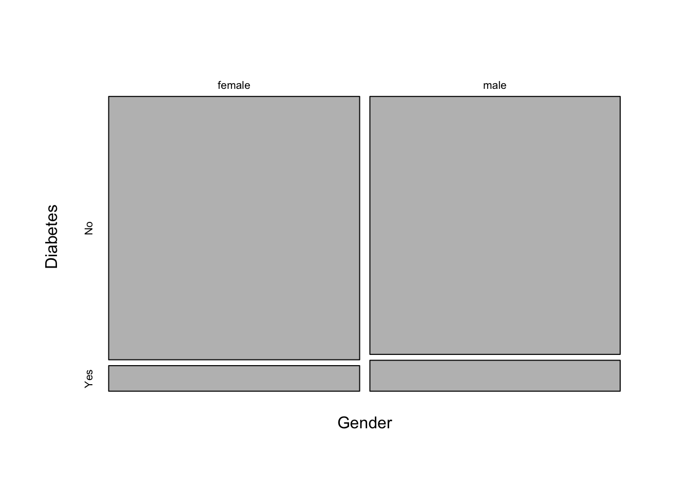
Let’s create a different contingency table, this time looking at the relationship between race and whether the person had health insurance. Display the table with marginal totals.
xt <- xtabs(~Race+Insured, data=nha)
addmargins(xt)## Insured
## Race No Yes Sum
## Asian 46 169 215
## Black 86 330 416
## Hispanic 89 151 240
## Mexican 147 141 288
## Other 33 65 98
## White 307 2141 2448
## Sum 708 2997 3705Let’s do the same thing as above, this time showing the proportion of people in each race category having health insurance.
prop.table(xt, margin=1)## Insured
## Race No Yes
## Asian 0.2139535 0.7860465
## Black 0.2067308 0.7932692
## Hispanic 0.3708333 0.6291667
## Mexican 0.5104167 0.4895833
## Other 0.3367347 0.6632653
## White 0.1254085 0.8745915Now, let’s run a chi-square test for independence.
chisq.test(xt)##
## Pearson's Chi-squared test
##
## data: xt
## X-squared = 323.3, df = 5, p-value < 2.2e-16The result is highly significant. In fact, so significant, that the display rounds off the p-value to something like \(<2.2 \times 10^{-16}\). If you look at the help for ?chisq.test you’ll see that displaying the test only shows you summary information, but other components can be accessed. For example, we can easily get the actual p-value, or the expected counts under the null hypothesis of independence.
chisq.test(xt)$p.value## [1] 9.754238e-68chisq.test(xt)$expected## Insured
## Race No Yes
## Asian 41.08502 173.91498
## Black 79.49474 336.50526
## Hispanic 45.86235 194.13765
## Mexican 55.03482 232.96518
## Other 18.72713 79.27287
## White 467.79595 1980.20405We can also make a mosaic plot similar to above:
mosaicplot(xt, main=NA)
Logistic regression
What if we wanted to model the discrete outcome, e.g., whether someone is insured, against several other variables, similar to how we did with multiple linear regression? We can’t use linear regression because the outcome isn’t continuous – it’s binary, either Yes or No. For this we’ll use logistic regression to model the log odds of binary response. That is, instead of modeling the outcome variable, \(Y\), directly against the inputs, we’ll model the log odds of the outcome variable.
If \(p\) is the probability that the individual is insured, then \(\frac{p}{1-p}\) is the odds that person is insured. Then it follows that the linear model is expressed as:
\[log(\frac{p}{1-p}) = \beta_0 + \beta_1 x_1 + \cdots + \beta_k x_k\]
Where \(\beta_0\) is the intercept, \(\beta_1\) is the increase in the odds of the outcome for every unit increase in \(x_1\), and so on.
Logistic regression is a type of generalized linear model (GLM). We fit GLM models in R using the glm() function. It works like the lm() function except we specify which GLM to fit using the family argument. Logistic regression requires family=binomial.
The typical use looks like this:
mod <- glm(y ~ x, data=yourdata, family='binomial')
summary(mod)Before we fit a logistic regression model let’s relevel the Race variable so that “White” is the baseline. We saw above that people who identify as “White” have the highest rates of being insured. When we run the logistic regression, we’ll get a separate coefficient (effect) for each level of the factor variable(s) in the model, telling you the increased odds that that level has, as compared to the baseline group.
#Look at Race. The default ordering is alphabetical
nha$Race
# Let's relevel that where the group with the highest rate of insurance is "baseline"
relevel(nha$Race, ref="White")
# If we're happy with that result, permanently change it
nha$Race <- relevel(nha$Race, ref="White")
# Or do it the dplyr way
nha <- nha %>%
mutate(Race=relevel(Race, ref="White"))Now, let’s fit a logistic regression model assessing how the odds of being insured change with different levels of race.
fit <- glm(Insured~Race, data=nha, family="binomial")
summary(fit)##
## Call:
## glm(formula = Insured ~ Race, family = "binomial", data = nha)
##
## Deviance Residuals:
## Min 1Q Median 3Q Max
## -2.0377 0.5177 0.5177 0.5177 1.1952
##
## Coefficients:
## Estimate Std. Error z value Pr(>|z|)
## (Intercept) 1.94218 0.06103 31.825 < 2e-16
## RaceAsian -0.64092 0.17715 -3.618 0.000297
## RaceBlack -0.59744 0.13558 -4.406 1.05e-05
## RaceHispanic -1.41354 0.14691 -9.622 < 2e-16
## RaceMexican -1.98385 0.13274 -14.946 < 2e-16
## RaceOther -1.26430 0.22229 -5.688 1.29e-08
##
## (Dispersion parameter for binomial family taken to be 1)
##
## Null deviance: 3614.6 on 3704 degrees of freedom
## Residual deviance: 3336.6 on 3699 degrees of freedom
## (2 observations deleted due to missingness)
## AIC: 3348.6
##
## Number of Fisher Scoring iterations: 4The Estimate column shows the log of the odds ratio – how the log odds of having health insurance changes at each level of race compared to White. The P-value for each coefficient is on the far right. This shows that every other race has significantly less rates of health insurance coverage. But, as in our multiple linear regression analysis above, are there other important variables that we’re leaving out that could alter our conclusions? Lets add a few more variables into the model to see if something else can explain the apparent Race-Insured association. Let’s add a few things likely to be involved (Age and Income), and something that’s probably irrelevant (hours slept at night).
fit <- glm(Insured ~ Age+Income+SleepHrsNight+Race, data=nha, family="binomial")
summary(fit)##
## Call:
## glm(formula = Insured ~ Age + Income + SleepHrsNight + Race,
## family = "binomial", data = nha)
##
## Deviance Residuals:
## Min 1Q Median 3Q Max
## -2.4815 0.3025 0.4370 0.6252 1.6871
##
## Coefficients:
## Estimate Std. Error z value Pr(>|z|)
## (Intercept) -3.501e-01 2.919e-01 -1.199 0.230
## Age 3.371e-02 2.949e-03 11.431 < 2e-16
## Income 1.534e-05 1.537e-06 9.982 < 2e-16
## SleepHrsNight -1.763e-02 3.517e-02 -0.501 0.616
## RaceAsian -4.550e-01 2.031e-01 -2.241 0.025
## RaceBlack -2.387e-01 1.536e-01 -1.554 0.120
## RaceHispanic -1.010e+00 1.635e-01 -6.175 6.61e-10
## RaceMexican -1.404e+00 1.483e-01 -9.468 < 2e-16
## RaceOther -9.888e-01 2.422e-01 -4.082 4.46e-05
##
## (Dispersion parameter for binomial family taken to be 1)
##
## Null deviance: 3284.3 on 3395 degrees of freedom
## Residual deviance: 2815.0 on 3387 degrees of freedom
## (311 observations deleted due to missingness)
## AIC: 2833
##
## Number of Fisher Scoring iterations: 5A few things become apparent:
- Age and income are both highly associated with whether someone is insured. Both of these variables are highly significant (\(P<2.2 \times 10^{-16}\)), and the coefficient (the
Estimatecolumn) is positive, meaning that for each unit increase in one of these variables, the odds of being insured increases by the corresponding amount. - Hours slept per night is not meaningful at all.
- After accounting for age and income, several of the race-specific differences are no longer statistically significant, but others remain so.
- The absolute value of the test statistic (column called
z value) can roughly be taken as an estimate of the “importance” of that variable to the overall model. So, age and income are the most important influences in this model; self-identifying as Hispanic or Mexican are also very highly important, hours slept per night isn’t important at all, and the other race categories fall somewhere in between.
There is much more to go into with logistic regression. This lesson only scratches the surface. Missing from this lesson are things like regression diagnostics, model comparison approaches, penalization, interpretation of model coefficients, fitting interaction effects, and much more. Alan Agresti’s Categorical Data Analysis has long been considered the definitive text on this topic. I also recommend Agresti’s Introduction to Categorical Data Analysis (a.k.a. “Agresti lite”) for a gentler introduction.
Exercise set 3
- What’s the relationship between diabetes and participating in rigorous physical activity or sports?
- Create a contingency table with Diabetes status in rows and physical activity status in columns.
- Display that table with margins.
- Show the proportions of diabetics and nondiabetics, separately, who are physically active or not.
- Is this relationship significant?
- Create a mosaic plot to visualize the relationship.
- Model the same association in a logistic regression framework to assess the risk of diabetes using physical activity as a predictor.
- Fit a model with just physical activity as a predictor, and display a model summary.
- Add gender to the model, and show a summary.
- Continue adding weight and age to the model. What happens to the gender association?
- Continue and add income to the model. What happens to the original association with physical activity?
Power & sample size
This is a necessarily short introduction to the concept of power and sample size calculations. Statistical power, also sometimes called sensitivity, is defined as the probability that your test correctly rejects the null hypothesis when the alternative hypothesis is true. That is, if there really is an effect (difference in means, association between categorical variables, etc.), how likely are you to be able to detect that effect at a given statistical significance level, given certain assumptions. Generally there are a few moving pieces, and if you know all but one of them, you can calculate what that last one is.
- Power: How likely are you to detect the effect? (Usually like to see 80% or greater).
- N: What is the sample size you have (or require)?
- Effect size: How big is the difference in means, odds ratio, etc?
If we know we want 80% power to detect a certain magnitude of difference between groups, we can calculate our required sample size. Or, if we know we can only collect 5 samples, we can calculate how likely we are to detect a particular effect. Or, we can work to solve the last one - if we want 80% power and we have 5 samples, what’s the smallest effect we can hope to detect?
All of these questions require certain assumptions about the data and the testing procedure. Which kind of test is being performed? What’s the true effect size (often unknown, or estimated from preliminary data), what’s the standard deviation of samples that will be collected (often unknown, or estimated from preliminary data), what’s the level of statistical significance needed (traditionally p<0.05, but must consider multiple testing corrections).
T-test power/N
The power.t.test() empirically estimates power or sample size of a t-test for differences in means. If we have 20 samples in each of two groups (e.g., control versus treatment), and the standard deviation for whatever we’re measuring is 2.3, and we’re expecting a true difference in means between the groups of 2, what’s the power to detect this effect?
power.t.test(n=20, delta=2, sd=2.3)##
## Two-sample t test power calculation
##
## n = 20
## delta = 2
## sd = 2.3
## sig.level = 0.05
## power = 0.7641668
## alternative = two.sided
##
## NOTE: n is number in *each* groupWhat’s the sample size we’d need to detect a difference of 0.8 given a standard deviation of 1.5, assuming we want 80% power?
power.t.test(power=.80, delta=.8, sd=1.5)##
## Two-sample t test power calculation
##
## n = 56.16413
## delta = 0.8
## sd = 1.5
## sig.level = 0.05
## power = 0.8
## alternative = two.sided
##
## NOTE: n is number in *each* groupProportions power/N
What about a two-sample proportion test (e.g., chi-square test)? If we have two groups (control and treatment), and we’re measuring some outcome (e.g., infected yes/no), and we know that the proportion of infected controls is 80% but 20% in treated, what’s the power to detect this effect in 5 samples per group?
power.prop.test(n=5, p1=0.8, p2=0.2)##
## Two-sample comparison of proportions power calculation
##
## n = 5
## p1 = 0.8
## p2 = 0.2
## sig.level = 0.05
## power = 0.4688159
## alternative = two.sided
##
## NOTE: n is number in *each* groupHow many samples would we need for 90% power?
power.prop.test(power=0.9, p1=0.8, p2=0.2)##
## Two-sample comparison of proportions power calculation
##
## n = 12.37701
## p1 = 0.8
## p2 = 0.2
## sig.level = 0.05
## power = 0.9
## alternative = two.sided
##
## NOTE: n is number in *each* groupAlso check out the pwr package which has power calculation functions for other statistical tests.
| Function | Power calculations for |
|---|---|
pwr.2p.test() |
Two proportions (equal n) |
pwr.2p2n.test() |
Two proportions (unequal n) |
pwr.anova.test() |
Balanced one way ANOVA |
pwr.chisq.test() |
Chi-square test |
pwr.f2.test() |
General linear model |
pwr.p.test() |
Proportion (one sample) |
pwr.r.test() |
Correlation |
pwr.t.test() |
T-tests (one sample, 2 sample, paired) |
pwr.t2n.test() |
T-test (two samples with unequal n) |
Exercise set 4
- You’re doing a gene expression experiment. What’s your power to detect a 2-fold change in a gene with a standard deviation of 0.7, given 3 samples? (Note - fold change is usually given on the \(log_2\) scale, so a 2-fold change would be a
deltaof 1. That is, if the fold change is 2x, then \(log_2(2)=1\), and you should use 1 in the calculation, not 2).
## [1] 0.2709095- How many samples would you need to have 80% power to detect this effect?
## [1] 8.764711- You’re doing a population genome-wide association study (GWAS) looking at the effect of a SNP on disease X. Disease X has a baseline prevalence of 5% in the population, but you suspect the SNP might increase the risk of disease X by 10% (this is typical for SNP effects on common, complex diseases). Calculate the number of samples do you need to have 80% power to detect this effect, given that you want a genome-wide statistical significance of \(p<5\times10^{-8}\) to account for multiple testing.1 (Hint, you can expressed \(5\times10^{-8}\) in R using
5e-8instead of.00000005).
## [1] 157589.5Tidying models
We spent a lot of time in other lessons on tidy data, where each column is a variable and each row is an observation. Tidy data is easy to filter observations based on values in a column (e.g., we could get just adult males with filter(nha, Gender=="male" & Age>=18), and easy to select particular variables/features of interest by their column name.
Even when we start with tidy data, we don’t end up with tidy models. The output from tests like t.test or lm are not data.frames, and it’s difficult to get the information out of the model object that we want. The broom package bridges this gap.

Depending on the type of model object you’re using, broom provides three methods that do different kinds of tidying:
tidy: constructs a data frame that summarizes the model’s statistical findings like coefficients and p-values.augment: add columns to the original data that was modeled, like predictions and residuals.glance: construct a concise one-row summary of the model with information like \(R^2\) that are computed once for the entire model.
Let’s go back to our linear model example.
# Try modeling Testosterone against Physical Activity, Age, and Gender.
fit <- lm(Testosterone~PhysActive+Age+Gender, data=nha)
# See what that model looks like:
summary(fit)##
## Call:
## lm(formula = Testosterone ~ PhysActive + Age + Gender, data = nha)
##
## Residuals:
## Min 1Q Median 3Q Max
## -397.91 -31.01 -4.42 20.50 1400.90
##
## Coefficients:
## Estimate Std. Error t value Pr(>|t|)
## (Intercept) 46.6931 7.5729 6.166 7.83e-10
## PhysActiveYes 9.2749 4.4617 2.079 0.0377
## Age -0.5904 0.1282 -4.605 4.28e-06
## Gendermale 385.1989 4.3512 88.526 < 2e-16
##
## Residual standard error: 127.5 on 3434 degrees of freedom
## (269 observations deleted due to missingness)
## Multiple R-squared: 0.6969, Adjusted R-squared: 0.6966
## F-statistic: 2632 on 3 and 3434 DF, p-value: < 2.2e-16What if we wanted to pull out the coefficient for Age, or the P-value for PhysActive? It gets pretty gross. We first have to coef(summary(lmfit)) to get a matrix of coefficients, the terms are still stored in row names, and the column names are inconsistent with other packages (e.g. Pr(>|t|) compared to p.value). Yuck!
coef(summary(fit))["Age", "Estimate"]## [1] -0.5903616coef(summary(fit))["PhysActiveYes", "Pr(>|t|)"]## [1] 0.03771185Instead, you can use the tidy function, from the broom package, on the fit:
# Install the package if you don't have it
# install.packages("broom")
library(broom)
tidy(fit)## term estimate std.error statistic p.value
## 1 (Intercept) 46.6931314 7.5728848 6.165831 7.825833e-10
## 2 PhysActiveYes 9.2749247 4.4617201 2.078778 3.771185e-02
## 3 Age -0.5903616 0.1282059 -4.604795 4.278461e-06
## 4 Gendermale 385.1989414 4.3512332 88.526383 0.000000e+00This gives you a data.frame with all your model results. The row names have been moved into a column called term, and the column names are simple and consistent (and can be accessed using $). These can be manipulated with dplyr just like any other data frame.
tidy(fit) %>%
filter(term!="(Intercept)") %>%
select(term, p.value) %>%
arrange(p.value)## term p.value
## 1 Gendermale 0.000000e+00
## 2 Age 4.278461e-06
## 3 PhysActiveYes 3.771185e-02Instead of viewing the coefficients, you might be interested in the fitted values and residuals for each of the original points in the regression. For this, use augment, which augments the original data with information from the model. New columns begins with a . (to avoid overwriting any of the original columns).
# Augment the original data
# IF you get a warning about deprecated... purrr..., ignore. It's a bug that'll be fixed soon.
augment(fit) %>% head## .rownames Testosterone PhysActive Age Gender .fitted .se.fit
## 1 1 47.53 No 43 female 21.30758 4.010694
## 2 2 642.82 No 80 male 384.66314 5.480833
## 3 3 642.82 No 80 male 384.66314 5.480833
## 4 4 21.11 Yes 34 female 35.89576 3.885559
## 5 5 562.78 No 80 male 384.66314 5.480833
## 6 6 401.78 No 35 male 411.22942 4.363256
## .resid .hat .sigma .cooksd .std.resid
## 1 26.222419 0.0009890871 127.5448 1.047551e-05 0.20572422
## 2 258.156859 0.0018470928 127.4693 1.899317e-03 2.02620279
## 3 258.156859 0.0018470928 127.4693 1.899317e-03 2.02620279
## 4 -14.785760 0.0009283305 127.5453 3.125591e-06 -0.11599603
## 5 178.116859 0.0018470928 127.5093 9.041494e-04 1.39799066
## 6 -9.449415 0.0011706227 127.5455 1.610571e-06 -0.07414076# Plot residuals vs fitted values for males,
# colored by Physical Activity, size scaled by age
augment(fit) %>%
filter(Gender=="male") %>%
ggplot(aes(.fitted, .resid, col=PhysActive, size=Age)) + geom_point()
Finally, several summary statistics are computed for the entire regression, such as \(R^2\) and the F-statistic. These can be accessed with glance:
glance(fit)## r.squared adj.r.squared sigma statistic p.value df logLik AIC
## 1 0.696893 0.6966282 127.527 2631.777 0 4 -21544.86 43099.72
## BIC deviance df.residual
## 1 43130.44 55847628 3434The broom functions work on a pipe, so you can %>% your model directly to any of the functions like tidy(). Let’s tidy up our t-test:
t.test(AlcoholYear~RelationshipStatus, data=nha)##
## Welch Two Sample t-test
##
## data: AlcoholYear by RelationshipStatus
## t = 5.4315, df = 2674.8, p-value = 6.09e-08
## alternative hypothesis: true difference in means is not equal to 0
## 95 percent confidence interval:
## 13.05949 27.81603
## sample estimates:
## mean in group Committed mean in group Single
## 83.93416 63.49640t.test(AlcoholYear~RelationshipStatus, data=nha) %>% tidy()## estimate estimate1 estimate2 statistic p.value parameter conf.low
## 1 20.43776 83.93416 63.4964 5.431545 6.089562e-08 2674.82 13.05949
## conf.high method alternative
## 1 27.81603 Welch Two Sample t-test two.sided…and our Mann-Whitney U test / Wilcoxon rank-sum test:
wilcox.test(AlcoholYear~RelationshipStatus, data=nha)##
## Wilcoxon rank sum test with continuity correction
##
## data: AlcoholYear by RelationshipStatus
## W = 1068000, p-value = 0.0001659
## alternative hypothesis: true location shift is not equal to 0wilcox.test(AlcoholYear~RelationshipStatus, data=nha) %>% tidy()## statistic p.value method
## 1 1067954 0.0001658551 Wilcoxon rank sum test with continuity correction
## alternative
## 1 two.sided…and our Fisher’s exact test on the cross-tabulated data:
xtabs(~Gender+Diabetes, data=nha) %>% fisher.test()##
## Fisher's Exact Test for Count Data
##
## data: .
## p-value = 0.05992
## alternative hypothesis: true odds ratio is not equal to 1
## 95 percent confidence interval:
## 0.9883143 1.5466373
## sample estimates:
## odds ratio
## 1.235728xtabs(~Gender+Diabetes, data=nha) %>% fisher.test() %>% tidy()## estimate p.value conf.low conf.high
## 1 1.235728 0.05992352 0.9883143 1.546637
## method alternative
## 1 Fisher's Exact Test for Count Data two.sided…and finally, a logistic regression model:
# fit the model and summarize it the usual way
glmfit <- glm(Insured~Race, data=nha, family=binomial)
summary(glmfit)##
## Call:
## glm(formula = Insured ~ Race, family = binomial, data = nha)
##
## Deviance Residuals:
## Min 1Q Median 3Q Max
## -2.0377 0.5177 0.5177 0.5177 1.1952
##
## Coefficients:
## Estimate Std. Error z value Pr(>|z|)
## (Intercept) 1.94218 0.06103 31.825 < 2e-16
## RaceAsian -0.64092 0.17715 -3.618 0.000297
## RaceBlack -0.59744 0.13558 -4.406 1.05e-05
## RaceHispanic -1.41354 0.14691 -9.622 < 2e-16
## RaceMexican -1.98385 0.13274 -14.946 < 2e-16
## RaceOther -1.26430 0.22229 -5.688 1.29e-08
##
## (Dispersion parameter for binomial family taken to be 1)
##
## Null deviance: 3614.6 on 3704 degrees of freedom
## Residual deviance: 3336.6 on 3699 degrees of freedom
## (2 observations deleted due to missingness)
## AIC: 3348.6
##
## Number of Fisher Scoring iterations: 4# tidy it up!
tidy(glmfit)## term estimate std.error statistic p.value
## 1 (Intercept) 1.9421805 0.06102764 31.824604 2.956937e-222
## 2 RaceAsian -0.6409232 0.17714581 -3.618055 2.968256e-04
## 3 RaceBlack -0.5974352 0.13558235 -4.406438 1.050844e-05
## 4 RaceHispanic -1.4135371 0.14691100 -9.621724 6.473720e-22
## 5 RaceMexican -1.9838532 0.13273768 -14.945667 1.662182e-50
## 6 RaceOther -1.2643008 0.22228811 -5.687667 1.287864e-08# do whatever you want now
tidy(glmfit) %>%
filter(term!="(Intercept)") %>%
mutate(logp=-1*log10(p.value)) %>%
ggplot(aes(term, logp)) + geom_bar(stat="identity") + coord_flip()
Check out some of the other broom vignettes on CRAN, and also check out the biobroom package on bioconductor for turning bioconductor objects and analytical results into tidy data frames.
Homework
Stress tests & muscular dystrophy genetics
There are two parts to this assignment, each using data curated and hosted by the Vanderbilt Department of Biostatistics. The first part looks at the effects of different doses of a drug used during echocardiograms called dobutamine. The second uses data collected to examine several blood serum markers believed to be associated with genetics for a specific kind of muscular dystrophy (DMD).
Additional topics & recommended reading
1. Batch effects
Batch effects are sources of technical variation introduced during an experiment, such as processing with different reagents, handling by a different technician, sequencing on a different flow cell, or processing samples in groups on different days. If these batch effects are strongly confounded with the study variable of interest, they can call into question the validity of your results, and in some cases, render collected data completely useless. The papers below discuss batch effects and how they can be mitigated.
- Chapter 5 of Scherer, Andreas. Batch effects and noise in microarray experiments: sources and solutions. Vol. 868. John Wiley & Sons, 2009.
- Leek, Jeffrey T., et al. “Tackling the widespread and critical impact of batch effects in high-throughput data.” Nature Reviews Genetics 11.10 (2010): 733-739. Available at https://www.ncbi.nlm.nih.gov/pmc/articles/PMC3880143/.
2. What’s my n?
“What’s my n” isn’t always a straightforward question to answer, especially when it comes to cell culture expriments. The post and article below go into some of these details.
- Statistics for Experimental Biologists: “What is ‘n’ in cell culture experiments?” Available at http://labstats.net/articles/cell_culture_n.html.
- Vaux, David L., Fiona Fidler, and Geoff Cumming. “Replicates and repeats—what is the difference and is it significant?.” EMBO reports 13.4 (2012): 291-296. Available at https://www.ncbi.nlm.nih.gov/pmc/articles/PMC3321166/.
3. Technical versus biological replicates
Technical replicates involve taking multiple measurements on the same sample. Biological replicates are different samples each with separate measurements/assays. While technical replicates can help calibrate the precision of an instrument or assay, biological replicates are necessary for statistical analysis to make inferences about a condition or treatment. Read the paper and note below for more information on technical vs biological replication.
- Blainey, Paul, Martin Krzywinski, and Naomi Altman. “Points of significance: replication.” Nature methods 11.9 (2014): 879-880. Available at http://rdcu.be/yguA.
- Illumina Technical Note: “The Power of Replicates.” Available at https://www.illumina.com/Documents/products/technotes/technote_power_replicates.pdf.